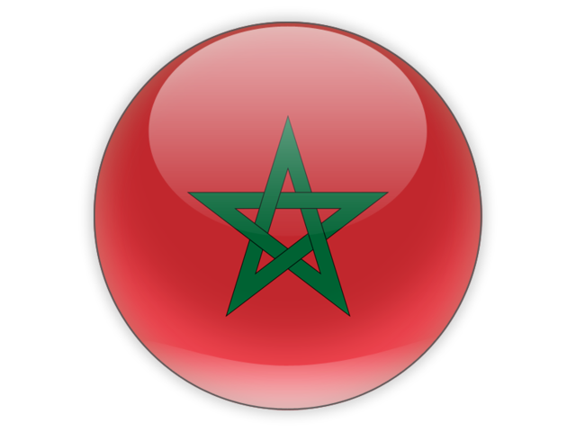
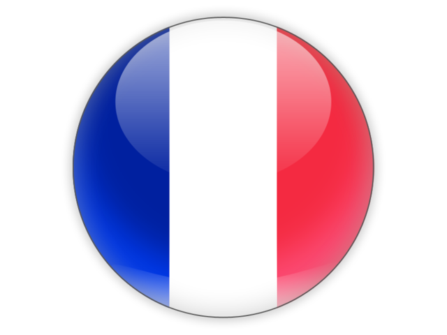

× Nouvelle recherche Mes favoris
Qui sommes nous? Votre contribution
Rejoins-Nous Contact
Accueil


Quboor a pour ambition de deveir un partenaire de confiance pour localiser et préserver les registres des cimetières. Notre plateforme est conçue pour aider les gens à localiser et partager les lieux de repos final de leurs proches en facilitant ainsi la visite et le recueillement des familles et amis auprès de ceux qui nous ont quittés.
Quboor est née de la volonté de simplifier la recherche de sépultures et de démocratiser l'accès à l'information généalogique au Maroc. Notre équipe travaille sans relâche pour numériser et indexer les registres des cimetières, rendant ces précieuses informations accessibles à tous.
Nous nous efforçons de rendre l'exploration et la découverte des registres de cimetières accessibles et simples. Notre plateforme offre un ensemble complet d'outils pour vous aider à rechercher des ancêtres et des proches, ainsi qu'à vous engager dans des efforts significatifs de préservation.
Fondateur & PDG
Jean apporte plus de 15 ans d'expérience en technologie et en recherche généalogique à Quboor.
Développeuse en Chef
Marie est le cerveau derrière notre puissant algorithme de recherche et notre interface conviviale.
Responsable des Partenariats
Pierre travaille sans relâche pour établir des partenariats avec les cimetières et les sociétés généalogiques du monde entier.